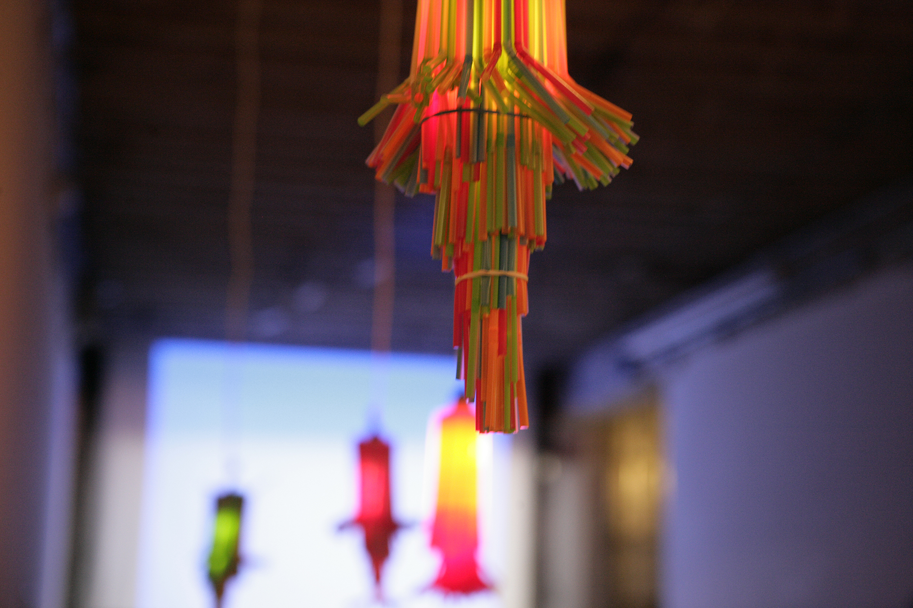

Published Book & Exhibition
extra•ordinary — Book & LA Gallery 著書『extra•ordinary』とLA個展インスタレーション
Co-authored, photographed, and designed with architect Hisako Ichiki. Published by Rockport Publishers, selling over 11,000 copies worldwide. 建築家・一木久子氏との共著。日用品を独自の視点で観察し新たな用途へと再編集。Rockport社より全世界で出版され、1.1万部以上を記録。

Global Book Release
extra•ordinary: Everyday Creativity extra•ordinary: 日常に潜む創造性
Everyday objects have latent possibilities far beyond their manufactured purpose. A paper clip becomes an architectural cantilever; a rubber band transforms into a musical chord. This book documents playful functional reinventions, curated through extensive photography and design commentary. 日用品には本来の用途を超えた無限の可能性が潜んでいます。クリップが建築の梁になり、輪ゴムが楽器の弦になる。徹底した観察とユーモラスな再定義を通じて、誰もが持つ創造性の扉を開くビジュアルブック。

Los Angeles Gallery Installation
LA ギャラリー・インスタレーション
Transforming the gallery itself into the physical realization of the book's philosophy.
本の世界観を空間全体で体感できるよう設計された展示空間。

Functional Cardboard Furniture
段ボールによる機能的家具
Custom benches, tables, and display fixtures crafted solely from industrial recycled cardboard.
強化段ボールのみで制作された実用的なテーブル、椅子、展示台。

Hands-On Participatory Exhibition
参加型ワークショップ・展示
Inviting visitors to touch, reassemble, and co-create unexpected functional objects on site.
来場者自らが日用品を組み替えて新たなオブジェを作るインタラクティブ展示。